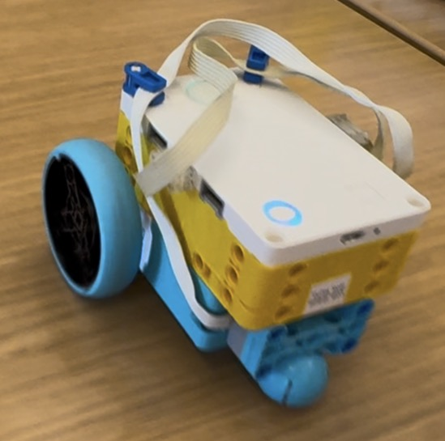

The task for this project was simple, build a simple car that could move forward, backwards, spin in place, and turn. The way I went about designing the car was to make the smallest footprint I could, while keeping the structure stable. I put the motors on the underside of the SPIKE Prime hub, and attached the wheels to the motorheads with 2 connectors each, I also added a pivot point on the front of the car to make it easier to turn and to keep the car flat. For support I joined the two motors together with 2 beams on the underside and then joined then in the front and attached the pivot point. The main challenge I faced with this project was trying to learn how to code while avoiding using the chat bot as much as possible. I wanted to learn how to read the code, understand how the functions and boilerplate worked, and then be able to write the code for the movement in my own style. I perfer to modulerize/abstract the code as much as possible, so I created a function for each movement, and then called those functions in the main loop. I defined them all as asynchronous functions, but I learnt that in order for to run said functions, you need to use a await command before. you need
from hub import port
import motor_pair, runloop
DRIVE_PAIR = motor_pair.PAIR_1 #idrk about this wrapper like what is this
#runs forward
async def run_forward(speed, time):
motor_pair.move_tank(DRIVE_PAIR, speed, speed)
await runloop.sleep_ms(time)
motor_pair.stop(DRIVE_PAIR)
#runs backwards
async def run_backward(speed, time):
motor_pair.move_tank(DRIVE_PAIR, speed, speed)
await runloop.sleep_ms(time)
motor_pair.stop(DRIVE_PAIR)
# input 1 for clockwise and -1 for counter clockwise
async def run_spin(speed, direction, time):
if (direction == 1) :
motor_pair.move_tank(DRIVE_PAIR, -speed, speed)
elif (direction == -1) :
motor_pair.move_tank(DRIVE_PAIR, speed, -speed)
await runloop.sleep_ms(time)
motor_pair.stop(DRIVE_PAIR)
async def run_turn(left_motor_speed, right_motor_speed, time):
motor_pair.move_tank(DRIVE_PAIR, right_motor_speed, left_motor_speed)
await runloop.sleep_ms(time)
motor_pair.stop(DRIVE_PAIR)
async def main():
motor_pair.pair(DRIVE_PAIR, port.C, port.D) #Port C is left wheel port d is right wheel
await runloop.sleep_ms(2000)
await run_forward(500, 2000)
await runloop.sleep_ms(1000)
await run_backward(-500, 2000)
await runloop.sleep_ms(1000)
await run_spin(100, 1, 3000)
await runloop.sleep_ms(500)
await run_spin(100, -1, 3000)
await run_turn(450, 250, 1000) #smoother
await runloop.sleep_ms(1000)
await run_turn(500, 0, 1000) #sharp curve
await motor_pair.unpair(DRIVE_PAIR)
runloop.run(main())